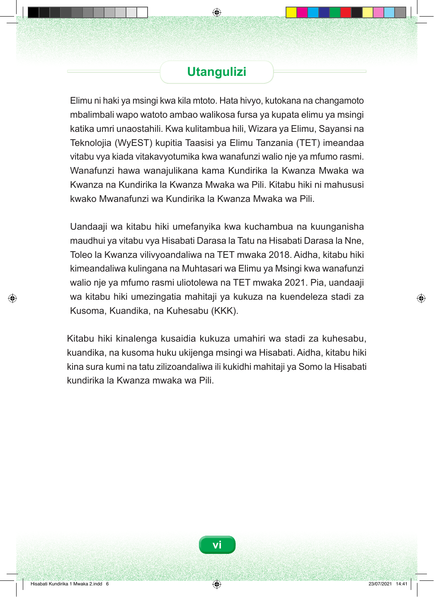

Utangulizi Elimu ni haki ya msingi kwa kila mtoto. Hata hivyo, kutokana na changamoto mbalimbali wapo watoto ambao walikosa fursa ya kupata elimu ya msingi katika umri unaostahili. Kwa kulitambua hili, Wizara ya Elimu, Sayansi na Teknolojia (WyEST) kupitia Taasisi ya Elimu Tanzania (TET) imeandaa vitabu vya kiada vitakavyotumika kwa wanafunzi walio nje ya mfumo rasmi. Wanafunzi hawa wanajulikana kama Kundirika la Kwanza Mwaka wa Kwanza na Kundirika la Kwanza Mwaka wa Pili. Kitabu hiki ni mahususi kwako Mwanafunzi wa Kundirika la Kwanza Mwaka wa Pili. Uandaaji wa kitabu hiki umefanyika kwa kuchambua na kuunganisha maudhui ya vitabu vya Hisabati Darasa la Tatu na Hisabati Darasa la Nne, Toleo la Kwanza vilivyoandaliwa na TET mwaka 2018. Aidha, kitabu hiki kimeandaliwa kulingana na Muhtasari wa Elimu ya Msingi kwa wanafunzi walio nje ya mfumo rasmi uliotolewa na TET mwaka 2021. Pia, uandaaji wa kitabu hiki umezingatia mahitaji ya kukuza na kuendeleza stadi za Kusoma, Kuandika, na Kuhesabu (KKK). Kitabu hiki kinalenga kusaidia kukuza umahiri wa stadi za kuhesabu, kuandika, na kusoma huku ukijenga msingi wa Hisabati. Aidha, kitabu hiki kina sura kumi na tatu zilizoandaliwa ili kukidhi mahitaji ya Somo la Hisabati kundirika la Kwanza mwaka wa Pili. vi Hisabati Kundirika 1 Mwaka 2.indd 6 23/07/2021 14:41